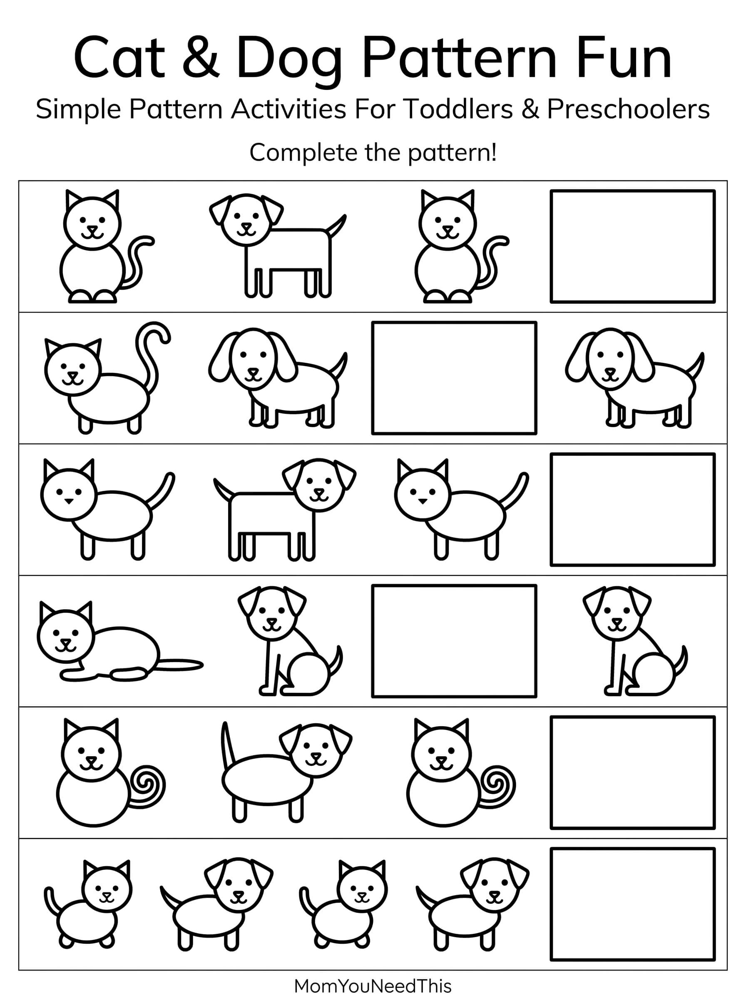

Animal Pattern AB Free Printable AB Animal Pattern Activity For Kids
Help toddlers and preschoolers practice early pattern recognition with this fun, kid-friendly AB animal pattern printable. Children can identify repeating animal sequences, figure out what comes next, and build early math, logic, and problem-solving skills through playful learning.
🐾 Find The Animal Pattern
Use the printable to help your child recognize repeating AB animal patterns, identify what comes next, and practice sequencing through a fun animal-themed activity.
Free Animal Pattern AB Printable


How To Use This Printable
Look at the repeating animal pattern with your child and ask what animal should come next. Encourage your child to identify the AB sequence and continue the pattern. You can also create your own animal patterns using animal toys, pictures, stickers, or drawings.
Why Learn Animal Patterns?
Recognizing patterns helps children develop early math, sequencing, logic, and problem-solving skills. Animal-themed AB patterns make learning fun while helping young children practice repetition, prediction, and visual recognition.
🎁 Keep Exploring Free Learning Activities
Discover more printable activities, toddler resources, and learning ideas created for busy parents.
🎁 View All Free Resources🖨️ How to Use This Printable
Get started in minutes — everything here is free and made for busy parents.
- Download the printable. Tap the download button to save the free Animal Pattern AB file to your device.
- Print it out. Use any home printer and regular paper — cardstock works great for pages little hands will use again and again.
- Learn together. Sit with your child, follow the activity, and keep it playful. Short sessions work best.
- Explore more. Check the free printables linked below for your next activity.
❓ Animal Pattern AB FAQs
Is this Animal Pattern AB printable free?
Yes — every printable on MomYouNeedThis is 100% free to download and print. No signup, no payment, just tap the download button.
How do I teach patterns with this printable?
Look at the pattern together and say it out loud, then ask your child what comes next. Let them predict before checking — guessing is where the learning happens.
Why are patterns important for preschoolers?
Recognizing patterns builds early math skills, logical thinking, and problem-solving — one of the strongest foundations for later math confidence.
🔗 More Free Printables You’ll Love
Pair this printable with more free learning activities from the MomYouNeedThis library.
- 🔤 Alphabet Coloring PagesFree A to Z alphabet coloring printables for toddlers and preschoolers.
- 🎏 Free Animal Pattern WorksheetsFree animal pattern worksheets printable for toddlers and preschoolers.
- 🎏 Free Color Pattern ABFree color pattern ab printable for toddlers and preschoolers.
- 🎏 Free Color Pattern WorksheetsFree color pattern worksheets printable for toddlers and preschoolers.